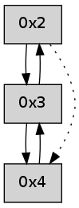

>> << IDX [start] -100 -25 -5 +0 +5 +25 +100 [230.224068165]
 Previous packets
----------------------------------------------------------------------
225.062616 beacon01(adaf) #0 coord=01,02,03,04 cycle=304.0ms assoc
-- color-indic=0 64 65 29
225.072568 beacon02(adaf) #0 coord=01,02,03,04 cycle=304.0ms assoc 64 75 4c
225.082570 beacon03(adaf) #0 coord=01,02,03,04 cycle=304.0ms assoc 64 3a e0
225.092571 beacon04(adaf) #0 coord=01,02,03,04 cycle=304.0ms assoc 64 e4 bd
225.104209 [Hello(4): seq=3 sym=3 sysInfo= stat=3:3,0,0,0]
----------------------------------------------------------------------
225.406712 beacon01(adaf) #0 coord=01,02,03,04 cycle=304.0ms assoc
-- color-indic=0 64 57 f6
225.416664 beacon02(adaf) #0 coord=01,02,03,04 cycle=304.0ms assoc 64 47 93
225.426666 beacon03(adaf) #0 coord=01,02,03,04 cycle=304.0ms assoc 64 08 3f
225.436663 beacon04(adaf) #0 coord=01,02,03,04 cycle=304.0ms assoc 64 d6 62
225.448312 [Hello(3): seq=4 sym=2,4 sysInfo= stat=2:1,0,0,0/4:1,0,0,0]
----------------------------------------------------------------------
225.750811 beacon01(adaf) #0 coord=01,02,03,04 cycle=304.0ms assoc
-- color-indic=0 64 b9 bc
225.760763 beacon02(adaf) #0 coord=01,02,03,04 cycle=304.0ms assoc 64 a9 d9
225.770764 beacon03(adaf) #0 coord=01,02,03,04 cycle=304.0ms assoc 64 e6 75
225.780764 beacon04(adaf) #0 coord=01,02,03,04 cycle=304.0ms assoc 64 38 28
225.792397 [Hello(4): seq=4 sym=3 sysInfo= stat=3:4,0,0,0]
----------------------------------------------------------------------
226.094907 beacon01(adaf) #0 coord=01,02,03,04 cycle=304.0ms assoc
-- color-indic=0 64 22 40
226.104859 beacon02(adaf) #0 coord=01,02,03,04 cycle=304.0ms assoc 64 32 25
226.114859 beacon03(adaf) #0 coord=01,02,03,04 cycle=304.0ms assoc 64 7d 89
226.124860 beacon04(adaf) #0 coord=01,02,03,04 cycle=304.0ms assoc 64 a3 d4
226.136499 [Hello(3): seq=5 sym=2,4 sysInfo= stat=2:1,0,0,0/4:2,0,0,0]
----------------------------------------------------------------------
226.439003 beacon01(adaf) #0 coord=01,02,03,04 cycle=304.0ms assoc
-- color-indic=0 64 cc 0a
226.448955 beacon02(adaf) #0 coord=01,02,03,04 cycle=304.0ms assoc 64 dc 6f
226.458955 beacon03(adaf) #0 coord=01,02,03,04 cycle=304.0ms assoc 64 93 c3
226.468958 beacon04(adaf) #0 coord=01,02,03,04 cycle=304.0ms assoc 64 4d 9e
226.480570 [Hello(4): seq=5 sym=3 sysInfo= stat=3:5,0,0,0]
----------------------------------------------------------------------
226.783102 beacon01(adaf) #0 coord=01,02,03,04 cycle=304.0ms assoc
-- color-indic=0 64 fe d5
226.824473 [Hello(3): seq=6 sym=2,4 sysInfo= stat=2:1,0,0,0/4:3,0,0,0]
----------------------------------------------------------------------
227.127198 beacon01(adaf) #0 coord=01,02,03,04 cycle=304.0ms assoc
-- color-indic=0 64 10 9f
227.137151 beacon02(adaf) #0 coord=01,02,03,04 cycle=304.0ms assoc 64 00 fa
227.147151 beacon03(adaf) #0 coord=01,02,03,04 cycle=304.0ms assoc 64 4f 56
227.157152 beacon04(adaf) #0 coord=01,02,03,04 cycle=304.0ms assoc 64 91 0b
227.168777 [Hello(4): seq=6 sym=3 sysInfo= stat=3:6,0,0,0]
----------------------------------------------------------------------
227.471297 beacon01(adaf) #0 coord=01,02,03,04 cycle=304.0ms assoc
-- color-indic=0 64 d9 24
227.481249 beacon02(adaf) #0 coord=01,02,03,04 cycle=304.0ms assoc 64 c9 41
227.491251 beacon03(adaf) #0 coord=01,02,03,04 cycle=304.0ms assoc 64 86 ed
227.501250 beacon04(adaf) #0 coord=01,02,03,04 cycle=304.0ms assoc 64 58 b0
227.512919 [Hello(2): seq=505 sym=3 asym=4 sysInfo= stat=3:5,0,0,0/4:0,0,0,0]
----------------------------------------------------------------------
227.815393 beacon01(adaf) #0 coord=01,02,03,04 cycle=304.0ms assoc
-- color-indic=0 64 37 6e
227.825345 beacon02(adaf) #0 coord=01,02,03,04 cycle=304.0ms assoc 64 27 0b
227.835345 beacon03(adaf) #0 coord=01,02,03,04 cycle=304.0ms assoc 64 68 a7
227.845347 beacon04(adaf) #0 coord=01,02,03,04 cycle=304.0ms assoc 64 b6 fa
227.856982 [Hello(4): seq=7 sym=3 sysInfo= stat=3:7,0,0,0]
----------------------------------------------------------------------
228.159489 beacon01(adaf) #0 coord=01,02,03,04 cycle=304.0ms assoc
-- color-indic=0 64 05 b1
228.169440 beacon02(adaf) #0 coord=01,02,03,04 cycle=304.0ms assoc 64 15 d4
228.179441 beacon03(adaf) #0 coord=01,02,03,04 cycle=304.0ms assoc 64 5a 78
228.189443 beacon04(adaf) #0 coord=01,02,03,04 cycle=304.0ms assoc 64 84 25
228.201117 [Hello(2): seq=506 sym=3 asym=4 sysInfo= stat=3:5,0,0,0/4:1,0,0,0]
----------------------------------------------------------------------
228.503585 beacon01(adaf) #0 coord=01,02,03,04 cycle=304.0ms assoc
-- color-indic=0 64 eb fb
228.513538 beacon02(adaf) #0 coord=01,02,03,04 cycle=304.0ms assoc 64 fb 9e
228.523538 beacon03(adaf) #0 coord=01,02,03,04 cycle=304.0ms assoc 64 b4 32
228.533537 beacon04(adaf) #0 coord=01,02,03,04 cycle=304.0ms assoc 64 6a 6f
228.545172 [Hello(4): seq=8 sym=3 sysInfo= stat=3:8,0,0,0]
----------------------------------------------------------------------
228.847682 beacon01(adaf) #0 coord=01,02,03,04 cycle=304.0ms assoc
-- color-indic=0 64 70 07
228.857635 beacon02(adaf) #0 coord=01,02,03,04 cycle=304.0ms assoc 64 60 62
228.867635 beacon03(adaf) #0 coord=01,02,03,04 cycle=304.0ms assoc 64 2f ce
228.877635 beacon04(adaf) #0 coord=01,02,03,04 cycle=304.0ms assoc 64 f1 93
----------------------------------------------------------------------
229.191778 beacon01(adaf) #0 coord=01,02,03,04 cycle=304.0ms assoc
-- color-indic=0 64 9e 4d
229.201731 beacon02(adaf) #0 coord=01,02,03,04 cycle=304.0ms assoc 64 8e 28
229.211731 beacon03(adaf) #0 coord=01,02,03,04 cycle=304.0ms assoc 64 c1 84
229.221730 beacon04(adaf) #0 coord=01,02,03,04 cycle=304.0ms assoc 64 1f d9
229.233356 [Hello(4): seq=9 sym=3 sysInfo= stat=3:9,0,0,0]
----------------------------------------------------------------------
229.535874 beacon01(adaf) #0 coord=01,02,03,04 cycle=304.0ms assoc
-- color-indic=0 64 ac 92
229.545826 beacon02(adaf) #0 coord=01,02,03,04 cycle=304.0ms assoc 64 bc f7
229.555826 beacon03(adaf) #0 coord=01,02,03,04 cycle=304.0ms assoc 64 f3 5b
229.565827 beacon04(adaf) #0 coord=01,02,03,04 cycle=304.0ms assoc 64 2d 06
----------------------------------------------------------------------
229.879972 beacon01(adaf) #0 coord=01,02,03,04 cycle=304.0ms assoc
-- color-indic=0 64 42 d8
229.889924 beacon02(adaf) #0 coord=01,02,03,04 cycle=304.0ms assoc 64 52 bd
229.899924 beacon03(adaf) #0 coord=01,02,03,04 cycle=304.0ms assoc 64 1d 11
229.909924 beacon04(adaf) #0 coord=01,02,03,04 cycle=304.0ms assoc 64 c3 4c
229.921551 [Hello(4): seq=10 sym=3 sysInfo= stat=3:10,0,0,0]